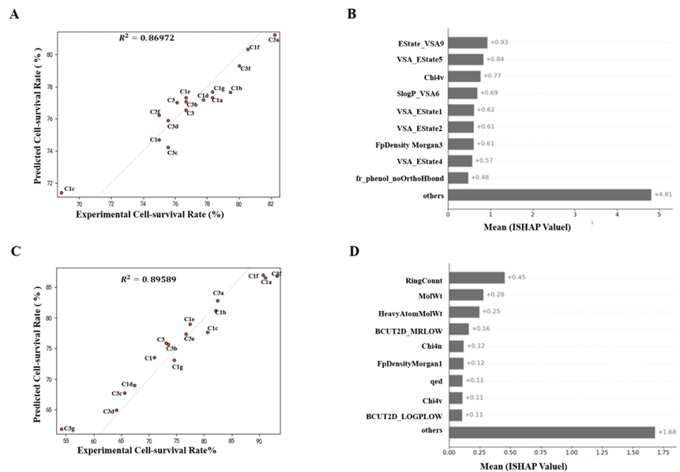

2024.05–2025.04
QSAR 活性预测
参与化合物活性预测模型构建，并使用 SHAP 分析关键特征。
机器学习 · QSAR · SHAP
项目背景与目标
待补充：项目需要解决的具体问题、约束条件和目标。
工作内容与方法
筛选化合物活性数据，构建机器学习预测模型，并分析特征对预测结果的影响。
成果与验证
以共同第一作者发表 SCI 论文一篇。
项目图集

后续补充资料
补充论文标题与链接、个人贡献、模型和评估方法。 图片为可选项，没有合适素材时可以删除这一提示区。
总结与收获
待补充：遇到的困难、关键选择，以及学到的方法。
← 返回项目列表